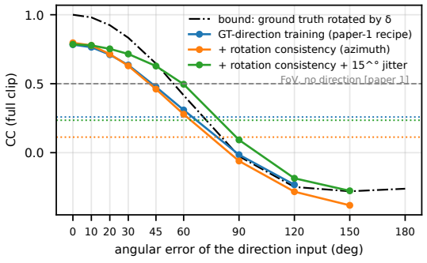
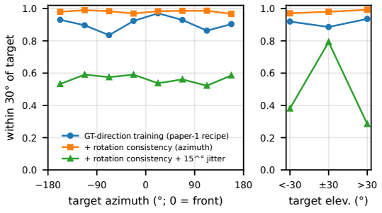
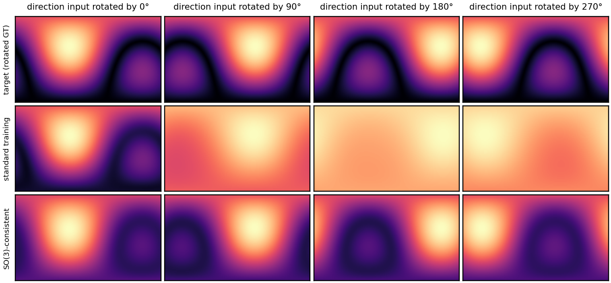

Abstract
Video-to-ambisonics models for 360-degree video are conditioned on a source direction, an oracle on the YT-Ambigen benchmark. Deployed, the direction comes from a user or a localizer, so the model should treat it as a control: put the sound where it says, anywhere on the sphere, and degrade gracefully when it is imprecise. Neither property has been measured. We propose a steerability protocol built on the exact rotation group of first-order ambisonics, which needs no annotation: an equivariance test, a follow test with random targets, and a control-precision curve. A spatializer trained on ground-truth directions is only approximately steerable: its peak follows a random target in 91% of the clips, but its field turns diffuse away from the training data's frontal directions. Rotation-consistency training, a free augmentation, makes the control exact (100% of targets, median 3°) and raises the benchmark score from CC 0.783 to 0.805. The precision curve of a faithful model is a data-only bound scaled by its accuracy: 30° of error costs 0.13 CC, a click on a 7×14 grid 0.015, and beyond 47° a direction is worse than none, so a leak-free panoramic localizer with 58° median error does not help.
Results at a glance
| Spatializer | CC, true direction | CC, equivariance test | Random target within 30° | Median follow error |
|---|---|---|---|---|
| standard training (GT directions) | 0.783 | 0.742 | 91% | 13° |
| + azimuth rotation consistency | 0.797 | 0.801 | 98% | 10° |
| + SO(3) rotation consistency | 0.805 | 0.805 | 100% | 3° |
| + azimuth rotation + 15° jitter | 0.786 | 0.785 | 56% | 27° |
Figures



360° steering examples
🎧 Use headphones. Every panel is a 360° player: press play, then drag inside the picture to look around; the 4-channel FOA output is rendered binaurally (Omnitone) and counter-rotated with your view. All players of a clip start facing front (yaw 0°) and share the same video and mono input; only the direction input given to the spatializer changes. In the first row the SO(3)-consistent model receives the true direction rotated about the vertical axis by 0°, 90°, 180° and 270°: the source should move around you in 90° steps and match the rotated ground truth in the second row. The standard model (third row) moves its peak too, but away from the front its field turns diffuse. Energy maps: azimuth −180…180° left to right, elevation −90…90°. Clips were chosen so that the true source lies in front, to the left, to the right and behind the camera.
Citation
@inproceedings{liang2027steerable,
title = {Steerable Video-to-Ambisonics Spatialization: Faithful Direction Control and How Precise It Needs to Be},
author = {Liming Liang and Lingfeng Yang and Luo Chen and Yuguo Yin and Zihan Xiong and Yuexian Zou},
booktitle = {Proc. IEEE Int. Conf. Acoustics, Speech and Signal Processing (ICASSP)},
year = {2027}, note = {submitted}
}
Acknowledgement: this work is supported by Guangdong Provincial Key Laboratory of Ultra High Definition Immersive Media Technology (Grant No. 2024B1212010006) and financially supported by Shenzhen Science and Technology Program (Grant No. SYSPG20241211173440004). Data: YT-Ambigen (Kim et al., ICLR 2025); only short test excerpts are shown here for research purposes. Binaural rendering uses Omnitone (Apache-2.0).